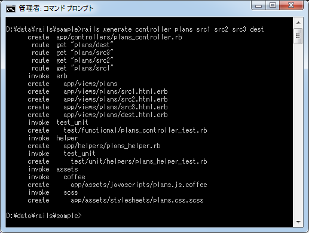
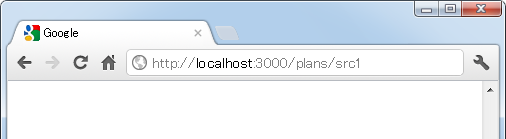
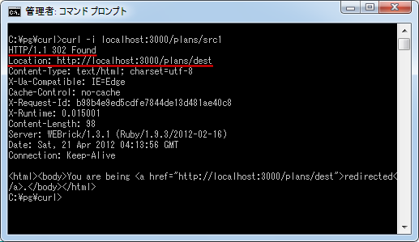
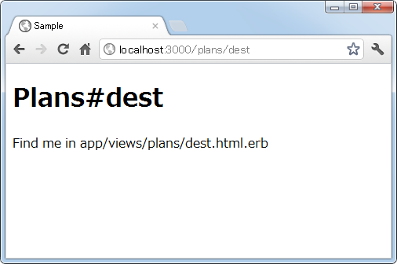
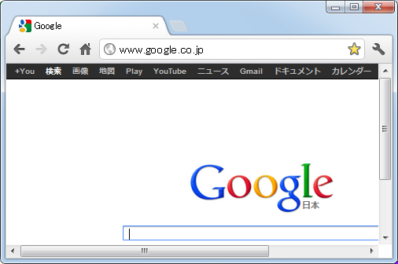
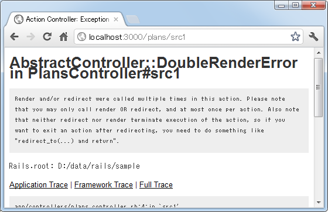

リダイレクトの設定
リダイレクトとは、別のURLを呼び出すリクエストを利用者のブラウザから送信してもらうように要求することです。最初に呼び出されたアクションから別のアクションを呼び出しているのではなく、利用者から新しいURLに対してリクエストを出しなおしてもらう点に注意して下さい。ここではリダイレクトの方法とどういった挙動をするのかについてご説明します。
1.リダイレクトした時の挙動
2.ステータスコードの変更
3.リダイレクト使用時のDoubleRenderError
リダイレクトした時の挙動
リダイレクトを行なうには redirect_to メソッドを使います。リダイレクト先としてはアプリケーション内の別のアクションを呼び出したり、アプリケーション外のURLなどが指定できます。
別のアクションへのリダイレクトは次のように記述します。
redirect_to :action => 'アクション名' redirect_to :controller => 'コントローラ名' :action => 'アクション名'
同じコントローラ内のアクションに対するリダイレクトの場合はアクション名だけを指定し、別のコントローラに含まれるアクションに対するリダイレクトの場合はコントローラ名とアクション名を指定して下さい。
パスや他のサイトのURLを指定することもできます。
redirect_to '/url/index' redirect_to 'http://www.google.co.jp/''
では実際に試してみます。「sample」アプリケーションの中に新しく「plans」コントローラを作成し、さらに「src1」「src2」「src3」「dest」アクションを同時に作成します。
rails generate controller plans src1 src2 src3 dest

作成されたコントローラクラス(app/controllers/plans_controller.rb)を次のように修正します。
class PlansController < ApplicationController
def src1
redirect_to :action => 'dest'
end
def src2
redirect_to '/plans/dest'
end
def src3
redirect_to 'http://www.google.co.jp/'
end
def dest
end
end
今回「src1」及び「src2」アクションを呼び出した場合、「dest」アクションへリダイレクトしています。また「src3」アクションを呼び出した場合、「http://www.google.co.jp/」へリダイレクトしています。
では「sample」アプリケーションを実行し、ブラウザからまず「http://localhost:3000/plans/src1」へアクセスして下さい。すると次のように表示されます。

「dest」アクションが呼び出されテンプレートを使って結果が出力されています。
またブラウザに表示されているURLも「http://localhost:3000/plans/src1」から「http://localhost:3000/plans/dest」に変わっています。リダイレクトは新しいURLへ再度リクエストを送信するように指示するものなので、今回「src1」を呼び出した結果「dest」を新しく呼び出すように指示が返ってくるため、ブラウザは自動的に新しいリクエストである「http://localhost:3000/plans/dest」へアクセスしているためです。
確認のためコマンドプロンプトからcurlを使って問い合わせを行なってみます。

スタータスコード 302 が返ってきていることが確認できます。302は一時的に移動することを表すコードで、移動先はLocationヘッダに設定されて返ってきます。今回は「http://localhost:3000/plans/dest」が設定されているため、この応答を受け取ったブラウザは改めて「http://localhost:3000/plans/dest」へリクエストを送信しています。
次にブラウザから「http://localhost:3000/plans/src2」へアクセスして下さい。こちらも同じ「dest」へリダイレクトしているため、先程と同じ結果となります。

最後にブラウザから「http://localhost:3000/plans/src3」へアクセスして下さい。こちらも外部のサイトへリダイレクトしているため、別のサイトが表示されます。

ステータスコードの変更
先程確認した通り、リダイレクトを行なった場合に最初に利用者へはステータスコードとして302(一時的な変更)が返されます。このステータスコードを場合によっては301(恒久的な変更)に変更したい場合があります。この場合は次の書式を使用して下さい。
redirect_to :action => 'アクション名', :status => ステータスコード
では先程作成したコントローラクラス(app/controllers/plans_controller.rb)の中の「src1」メソッドを次のように修正します。
class PlansController < ApplicationController
def src1
redirect_to :action => 'dest', :status => 301
end
def dest
end
end
ステータスコードとして301を返すように設定しました。ではブラウザから「http://localhost:3000/plans/src1」へアクセスして下さい。すると次のように表示されます。
スタータスコードが変わってもリダイレクトされることに変わりはないので、「dest」アクションを呼び出すURLへリダイレクトされた結果が表示されています。では今後はコマンドプロンプトからcurlを使って問い合わせを行なってみます。
スタータスコード 301 が返ってきていることが確認できます。このように必要な場合にはステータスコードを設定してリダイレクトして下さい。
リダイレクト使用時のDoubleRenderError
「renderメソッド」でも解説しましたが、Railsでは二度レンダリングを行おうとするとDoubleRenderErrorが発生します。
リダイレクトを行った場合も同じ扱いとなりますので、「redirect_to」メソッドを使ってリダイレクトを行ったあとはそのメソッドの最後で自動的にテンプレートが呼び出されることはありませんし、リダイレクトの後で「render」メソッドを明示的に呼び出すとエラーが発生します。
例として先程作成したコントローラクラス(app/controllers/plans_controller.rb)の中の「src1」メソッドを次のように修正します。
class PlansController < ApplicationController
def src1
redirect_to :action => 'dest'
render :text => 'End'
end
def dest
end
end
ではブラウザから「http://localhost:3000/plans/src1」へアクセスして下さい。すると次のように表示されます。

「AbstractController::DoubleRenderError」が発生します。またエラーになることから分かる通り「redirect_to」文を実行してもメソッドは終了せず次の文へ処理が進む点に注意して下さい。
( Written by Tatsuo Ikura )

著者 / TATSUO IKURA
初心者～中級者の方を対象としたプログラミング方法や開発環境の構築の解説を行うサイトの運営を行っています。